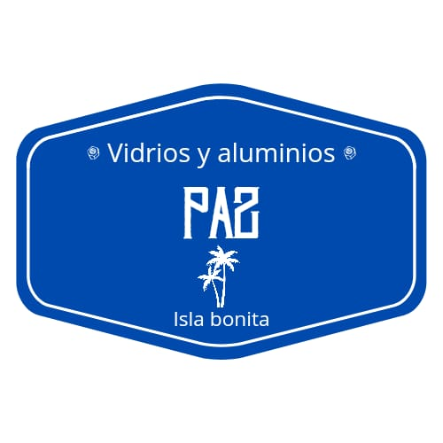

Plan de Negocio - Vidriería Local

Socios Clave
- Proveedores de vidrio. Buscar proveedores más confiables para mejorar los insumos.
- Albañiles y contratistas locales. Generar alianzas para que recomienden los servicios.
- Ferreterías locales. Podrían ser socios que refieran clientes o que vendan insumos en conjunto.
Actividades Clave
- Corte y suministro de vidrios a medida.
- Instalación de vidrieras, angeos, espejos y reparaciones.
- Atención al cliente en la tienda y de forma telefónica o digital.
- Promoción en redes sociales o en zonas locales.
Propuestas de Valor
- Vidrios a medida y reparaciones económicas. La vidriería destaca por su precio competitivo y la personalización de los productos.
- Servicios personalizados de instalación de vidrieras, espejos y reparaciones de ventanas.
Relación con Clientes
- Atención personalizada y cercana. Fomentar relaciones basadas en la confianza con los clientes del barrio.
- Garantía de calidad y satisfacción. Asegurar que el trabajo realizado cumple con las expectativas.
- Promociones. Ofrecer descuentos por recomendaciones o para clientes frecuentes.
Segmentos de Clientes
- Residentes del barrio La Isla y zonas cercanas.
- Pequeños negocios locales que necesitan vidrieras o espejos.
- Constructores o albañiles locales que necesitan suministros de vidrio para pequeñas obras.
Recursos Clave
- Calidad. Mejorar los insumos para ofrecer productos duraderos y con buena presentación.
- Herramientas básicas para corte e instalación de vidrio.
- Publicidad y visibilidad. Invertir en un letrero llamativo y mejorar la presencia digital.
- Capacitación para mejorar el conocimiento técnico y habilidades de instalación.
Canales
- Tienda física. Aunque pequeña, es el punto de contacto principal con los clientes locales.
- Boca a boca. Promover recomendaciones entre los vecinos y comerciantes locales.
- Redes sociales. Crear una página en Facebook o un perfil en Instagram para mostrar los trabajos realizados.
- Publicidad local. Carteles o folletos en zonas comerciales cercanas.
Estructura de Costos
- Compra de insumos.
- Publicidad (letrero nuevo, promoción en redes sociales, folletos).
- Mantenimiento de herramientas y transporte para instalaciones.
- Mejora de la tienda para hacerla más atractiva y organizada.
Fuentes de Ingresos
- Venta de vidrio, espejos y materiales relacionados.
- Servicios de instalación y reparación de vidrios.
- Promociones o paquetes de servicios (por ejemplo, instalación más suministro con descuento).